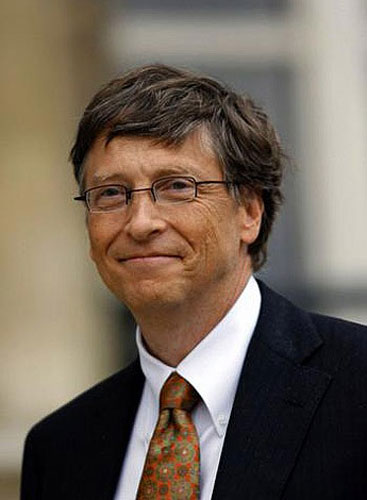
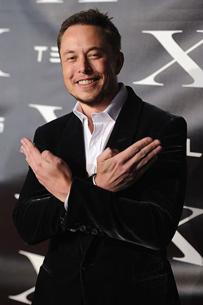
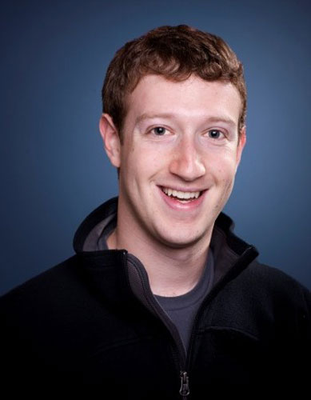
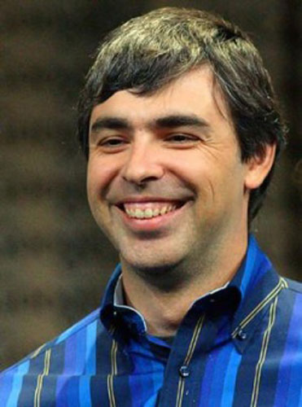
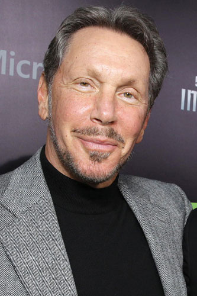

Добро пожаловать на наш сайт!
Здесь вы можете вдохновиться успехами выдающихся людей, а, в следующем шаге, если вы захотите куда-то применить своё вдохновение, можете посетить наш обучающий сайт. который станет отправной точкой к вашей новой жизни и приведет вас к успеху.
Вы сможете просмотреть ознакомиться с биографией, стилем жизни и успехами выдающихся людей, пройдя по ссылке сверху. Это займет не более десяти минут. В любом случае, если вы не располагаете большим отрезком времени, вы можете просмотреть краткую информацию на вкладке ниже
Билл Гейтс

Дата рождения: 28 октября 1955
Возраст: 61 год
Уи́льям Ге́нри Гейтс III — американский предприниматель и общественный деятель, филантроп, один из создателей (совместно с Полом Алленом) и бывший крупнейший акционер компании Microsoft. До июня 2008 года являлся руководителем компании, после ухода с поста остался в должности её неисполнительного председателя совета директоров. Также является сопредседателем благотворительного Фонда Билла и Мелинды Гейтс, членом совета директоров Berkshire Hathaway, ген. директор Cascade investment.
В период с 1996 по 2007 год, в 2009 и в 2015 годах — самый богатый человек планеты по версии журнала Forbes. На май 2016 года состояние Билла Гейтса оценивалось в 76,4 млрд долларов
Илон Маск

Дата рождения: 28 июня 1971
Возраст: 45 лет
Илон Рив Маск — канадско-американский инженер, предприниматель, изобретатель и инвестор; миллиардер.
Основатель, владелец, генеральный директор и главный инженер SpaceX и X.com главный разработчик (Chief Product Architect), генеральный директор и глава совета директоров Tesla Motors, входит в совет директоров компании SolarCity, основанной его двоюродными братьями.
В рейтинге миллиардеров журнала Forbes в 2016 году его состояние оценивается в $10,7 млрд.
Марк Цукерберг

Дата рождения: 14 мая 1984
Возраст: 32 года
Марк Э́ллиот Цу́керберг — американский программист и предприниматель в области интернет-технологий, долларовый миллиардер, один из разработчиков и основателей социальной сети Facebook. Руководитель компании Facebook Inc.
Состояние на октябрь 2016 года оценивается в $56,4 млрд.
Ларри Пейдж

Дата рождения: 26 марта 1973
Возраст: 43 года
Лоуренс «Ларри» Пейдж — разработчик и сооснователь (совместно с Сергеем Брином) поисковой системы «Google». 4 апреля 2011 года стал главным исполнительным директором компании, сменив на этом посту Эрика Шмидта.
Состояние на май 2016 года оценивается в $37,2 млрд.
Ларри Эллисон

Дата рождения: 17 августа 1944
Возраст: 72 года
Ло́уренс Джо́зеф Э́ллисон — американский предприниматель, сооснователь, председатель совета директоров и директор по технологиям(CTO) корпорации Oracle, бывший генеральный директор (CEO) Oracle (1976—2014), крупнейший акционер компании NetSuite (поглощённой Oracle в 2016 году за $9,3 млрд), начальный инвестор компании Salesforce.com.
Состояние на май 2016 года оценивается в $49,4 млрд.